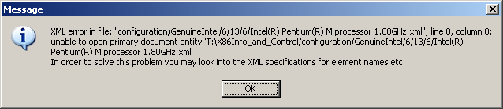
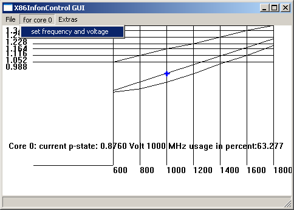
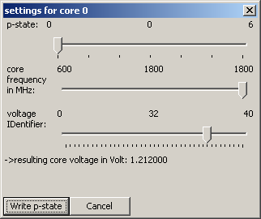

then create this config. file:
1. press "OK"
2. Put the laptop in AC mode to ensure you can also run the CPU with high frequencies.
-choose a power scheme that covers all frequencies (like "presentation")
-ensure no (other) program (like RMclock) modified the performance states from the default ones
-possibly disable Windows' dyn vfs:

if the option is grayed out like here then you should start the program as administrator.

here disabling is possible.
If you start a high load and it doesn't change to performance state "0"
If you change the CPU load (to 100%) and the operating frequency does not go up
/ if the CPU frequency does not change
then it's pretty sure that the OS's dynamic frequency scaling is disabled.
-ensure you have a low CPU usage in order to detect even the low frequencies
-x86info&control learns the p-states it reads. but usually it will not learn all p-states/ possible CPU core frequencies:
at the beginning 2 p-states:

and after a while 4 p-states:

But in order to get more frequencies, do (therefore it could be useful to disable the OS' DVFS):

do this ca. 5 times in order to get all or nearly all possible CPU core frequencies
then this is a possible result:

3. either save to file:

or: manually: insert as much of the voltage-frequency pairs you can see here into the config file with the path that was shown before
- note the Structure of the performance-state config file
- assign the voltage to the "max_voltage_in_Volt" attribute.
voltage_in_Volt, min_voltage_in_Volt are examined and set afterwards, usually you do no know them before

You need to test at least 2 frequencies:
- the
maximum frequency
and - a low
/the lowest frequency.
I would suggest to start with the maximum frequency(p-state "0"):

- run
the "Prime95" CPU stress application
- then
you probably have to start as many threads as there are CPU cores
because else you can not assign a high load thread to a specific CPU
core with Prime95
(I think its because if there is more than 1 CPU core then Windows' process scheduler switches the thread among the cores to achieve a similar load for each core) - or you start one thread and use Windows' task manager to assign the stress program to 1 CPU core


Then you should increase the voltage for the performance state the calculation error occured in as soon as possible. So you can avoid a reboot because of system instability. - then
you probably have to start as many threads as there are CPU cores
because else you can not assign a high load thread to a specific CPU
core with Prime95
If you have reached the lowest settable voltage and want to test for low voltages: select the next higher frequency. Then you needn't change the voltage.
Hit the tabular key until the voltage ID slider has the input focus

Now press the arrow key once shortly so that the voltage is decreased by 1 voltage step.

- If a voltage is too low for a specific frequency, sometimes Prime95 shows calc error after a few seconds, sometimes it lasts 5 minutes or even more.
- If
the voltage does not seem to be
too low, e.g.
- not freezed
- Prime95 has no calculation errors
- If there is
a sign that the voltage is too low,
e.g.:
- device (e.g. laptop) is
freezed:
- restart the device (e.g. laptop)
- remember the voltage "lowest_stable_voltage" you set or start Windows in safe mode and watch the latest log data for the last set voltage
- Prime95
has calculation errors:

That is a hint that the voltage is too low.
Then you should increase the voltage for the performance state the calculation error occured in as soon as possible. So you can avoid a reboot because of system instability.
- device (e.g. laptop) is
freezed:
- for the service (also possible for the GUI) to select the voltage for
the on-demand performance switching (Dynamic Voltage and Frequency
Scaling):
use the voltage "low_stable_voltage" = "lowest_stable_voltage" + 4 voltage steps" or "lowest_stable_voltage" + 5 voltage steps" for the configuration (file) for the performance state / frequency that was tested.
e.g. the lowest_stable_voltage is 1.148 Volt and the CPU is a "Pentium M":
"low_stable_voltage" = 1.148 Volt + 4 voltage steps = 1.148 Volt + 4 * 0.016 Volt = 1.212 Volt
write this value into the file "configuration/CPU Vendor/CPU family/CPU model/CPU stepping/CPU name.xml",
e.g. "C:\X86Info_and_Control\configuration\GenuineIntel\6\13\6\Intel(R) Pentium(R) M processor 1.80GHz.xml" for a Pentium M 745
Structure of the performance-state config file - if
you sometimes switch from altenate current to direct current (battery
mode) what is pretty common with notebooks:
test if the "low_stable_voltage" is really stable by an additional test:
If the CPU is inside a device that switches from AC to DC in case of no more current from the power adapter (like usual notebooks do): - insert a charged battery into the notebook
- put it into Alternate Current mode (so it gets its current from power adapter)
- remove from Alternate Current mode (e.g unplug the power cord) so it switches to Direct Current (=battery ) mode
- if
the device is not freezed:
go to step "put it into Alternate Current mode" and you want to ensure that this was not just a piece of luck - if the device is freezed:
"low_stable_voltage" = "low_stable_voltage -1 " or "low_stable_voltage -2 "
go to step "put it into Alternate Current mode" - now you can specify "low_stable_voltage" in the configuration file for the p-state you tested for the service and/ or GUI
- for the next frequency to test redo